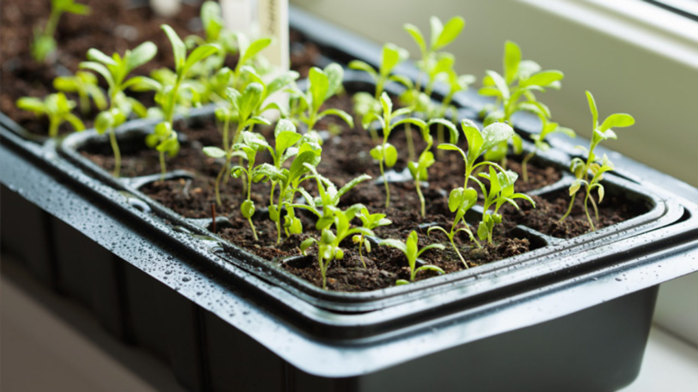
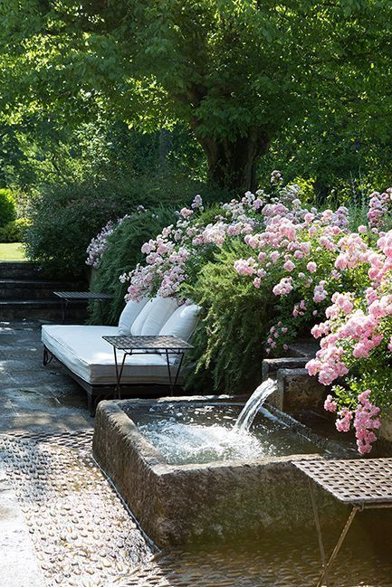
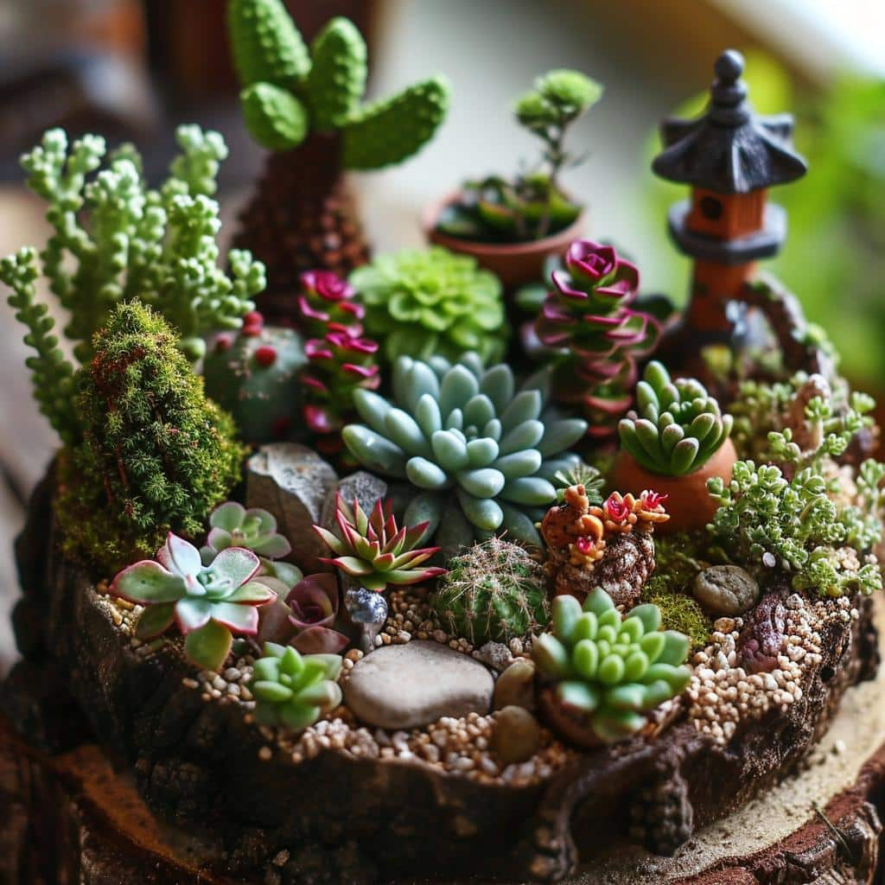
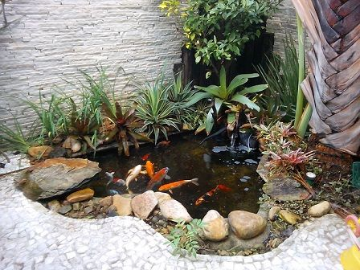

O nosso site trás recursos para ajudar os moradores urbanos a integrar natureza em suas vidas diárias
Horta Caseira
Lago no Jardim
Mini Jardim
Horta Caseira
Luz solar: Escolha um local que receba pelo menos 6 horas de luz solar direta por dia.
Acesso à água: Certifique-se de que o local tenha fácil acesso à água para irrigação.
Espaço adequado: Pode ser um espaço que receba pelo menos 4-6 horas de luz solar. Pode ser um canto do jardim, varanda, ou até mesmo uma janela ensolarada.
Seleção das plantas: Comece com ervas e vegetais fáceis de cultivar, como manjericão, salsa, cebolinha, alface, rúcula, etc.

Lago no Jardim
Escolha o local: Selecione um lugar que recebe sol e sombra.
Marcaçao e escavação: Marque o contorno de lago com uma corda ou tinta spray.Cave um buraco com a profundidade adequada.
Espaço adequado: Coloque uma lona especial para os lagos no buraco.Ajuste a lona,evitando rugas,e deixe sobrar um pouco nas bordas.
Enchimento de água: Encha o lago com água ajustando a lona.Use pedras ou cascalhos para segurar as lonas nas bordas etc.
Mini Jardim
Escolha o recipiente: Selecione recipientes que goste, como vasos, tigelas, caixas de madeira, xícaras grandes, ou terrários de vidro..
Preparação do recipiente: Se não houver furos de drenagem, coloque uma camada de pedras ou cascalhos no fundo para evitar acumulo de água.
Seleção de Plantas: Escolha plantas que se adaptem bem ao tamanho do seu mini jardim e às condições de luz disponíveis. Coloque as plantas no recipiente, organizando. Deixe espaço para que as plantas possam crescer.
Manutenção: Coloque o mini jardim em um local com luz adequada, verifique regularmente a umidade do solo e regue conforme o necessário, remova folhas secas ou mortas.